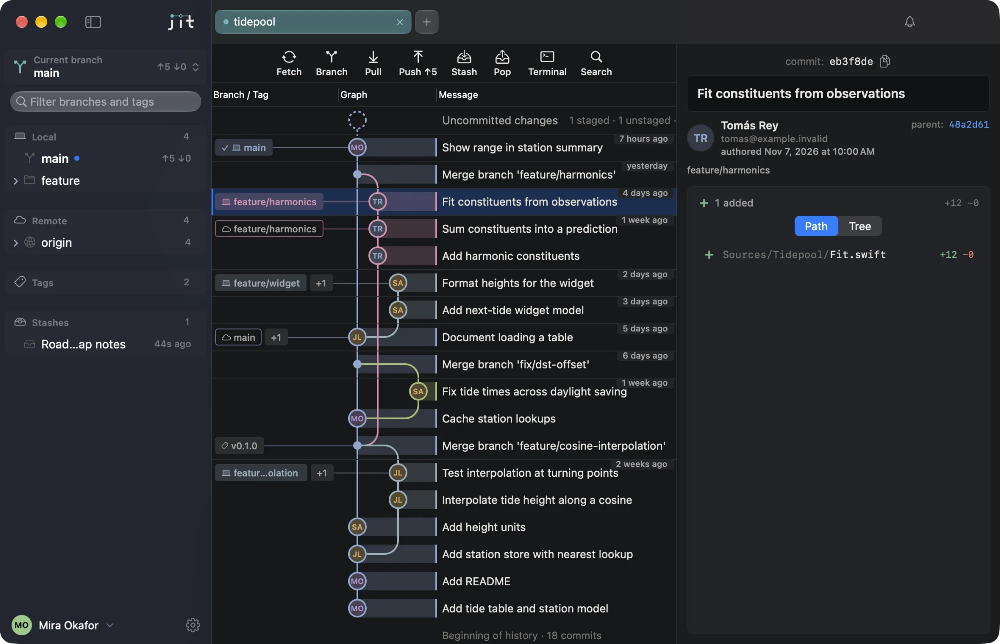
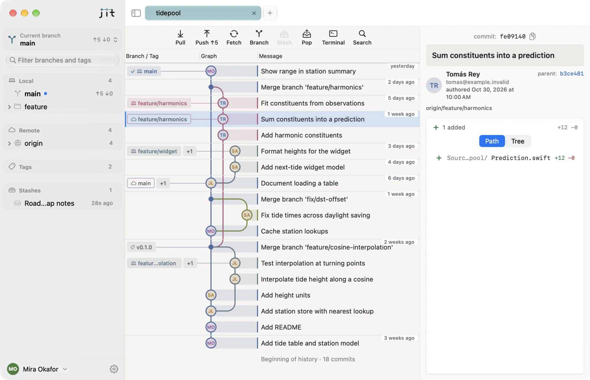
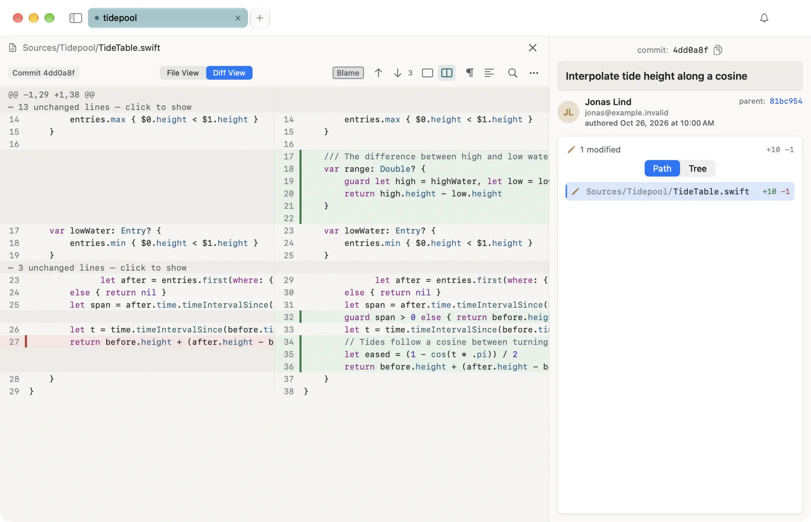
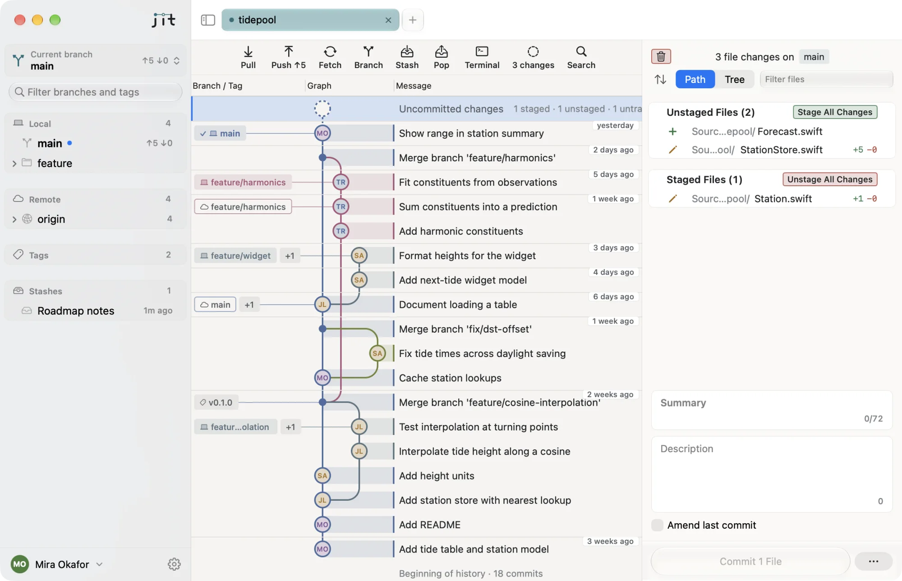

The Git client that behaves like the rest of your Mac.
Jit is free, open source and written entirely in Swift. No Electron, no web views, no background process. It opens in a quarter of a second and then gets out of the way.
10.9 MB. macOS 26 or later, Apple silicon


Light enough to forget it’s open
Jit never polls, runs no repeating timers and keeps no helper running in the background. These are measurements of the release build, not targets.
- 10.8 MB
- The whole download, with Git 2.56 inside. Nothing else to install.
- 259 ms
- From launch to a window you can use.
- 32 MB
- Memory with no repository open. 72 MB with a 10,000-commit repository.
- 0.00 %
- CPU while idle, with one tab open or five.
- 0 bytes
- Network traffic while idle. Nothing phones home.
Medians from the project’s own benchmark scripts. Methods and full results
Diffs you can act on
Read a change unified, side by side or as the full file, with syntax highlighting and word-level differences. Stage or discard a whole file, one hunk or a single line. Blame is a click away.

Stage, write, commit
Uncommitted work sits at the top of the graph, with unstaged and staged files beside it. The commit box counts characters, warns about long lines, and commits with ⌘↩ under the profile you chose.

And the rest of a working day
- Everyday Git
- Fetch, pull, push, clone, branch, merge, rebase, cherry-pick, revert and stash, each with continue, skip and abort where Git has them.
- Conflicts
- A three-way resolver that says plainly which side is yours and which is theirs.
- Profiles
- Work and personal identities, applied per command. Jit never edits
~/.gitconfigor~/.ssh/config, and secrets stay in the Keychain. - GitHub and GitLab
- SSH keys and access tokens, including self-managed GitLab, custom certificates and proxies.
- Large histories
- The graph is virtualized and tested on a repository of 100,000 commits.
- Careful by default
- Push uses force-with-lease, never plain force. Anything destructive asks first and says exactly what it will do.
- Command palette
- Press ⌘K and type what you want.
- Git included
- Git 2.56 ships inside the app. No Xcode, Command Line Tools or Homebrew needed.
Your code stays on your Mac
Jit has no server of its own, so there is nowhere for your data to go. No account, no telemetry, no crash reports, no update checks. Your repositories are read by Git, on your disk, and nothing about them is collected.
- It talks to your Git host, when you ask
- Fetch, pull, push and clone go straight from your Mac to GitHub, GitLab or your own server. Nothing passes through anyone in between.
- Secrets live in the Keychain
- Tokens and passphrases are stored only in the macOS Keychain. They never appear in logs, preferences or command arguments.
- One optional request
- Author pictures come from gravatar.com, using a hash of the email address and never the address itself. Turn it off in Settings and Jit makes no requests you didn’t start.
- Check it yourself
- The source is public, so every claim on this page can be read in the code.
Free, and yours to read
Jit is released under the MIT licence. There is no account, no subscription and no paid tier. All of it is on GitHub: the app, the design decisions and the benchmarks behind the numbers above.
Download Jit
Jit is in early testing, so expect rough edges. It needs macOS 26 or later on Apple silicon.
Opening it the first time
Jit is distributed free and is not notarized by Apple, so macOS blocks the first launch. Drag Jit to Applications and open it, click Done on the warning, then choose Open Anyway in System Settings, under Privacy & Security. Or run this once:
xattr -dr com.apple.quarantine /Applications/Jit.app